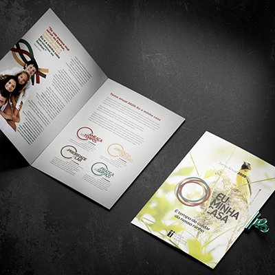
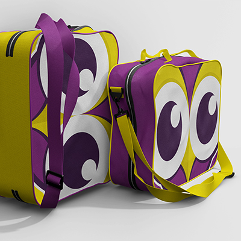
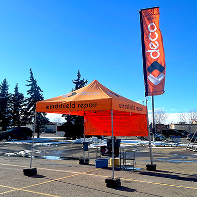

Building My Creative Base
My journey began with a Bachelor's Degree in Industrial Design at UniverCidade (2002-2006). This phase was all about building the foundation for my design expertise-exploring creativity, innovation, and strategic thinking. Early on, I worked as an Art Director at agencies like Agencia3 and Internad Publicidade, where I honed my skills in advertising campaigns and visual storytelling. These experiences shaped my artistic sensibilities and problem-solving mindset, preparing me for what was to come.

Merging Faith and Communication
When I pursued my Master’s in Theology at Pontifícia Universidade Católica do Rio de Janeiro (2014–2016), I discovered how to bring my design expertise together with a deep understanding of theology and communication. As Communication Manager at Betânia Church, I had the chance to completely revamp the church's branding, improve internal processes, and engage the community in meaningful ways. It was a time when I realized how powerful communication could be in creating connections and driving impact.

Shaping a Visionary Brand
In 2019, I took a leap and founded Bejota+Design. Leading a remote team, I worked with over 40 clients, delivering tailored branding and marketing solutions. I implemented Agile methodologies and Design Thinking to drive creativity and ensure client satisfaction. Beyond design, I offered personalized brand advisory services, helping clients develop cohesive and impactful identities. This was my chance to step into entrepreneurship and create something truly meaningful.

Redefining Innovation in Canada
Today, I’m pursuing a Diploma in Interactive Design - User Experience Major at SAIT (2024–present). This phase represents a new chapter in my life as I integrate my extensive experience with cutting-edge digital innovation. As the Head of Marketing at DECO Windshield Repair, I lead initiatives to improve customer satisfaction, SEO, and brand visibility. It’s been an exciting journey, blending strategic thinking with user-centric design in a dynamic, international market.